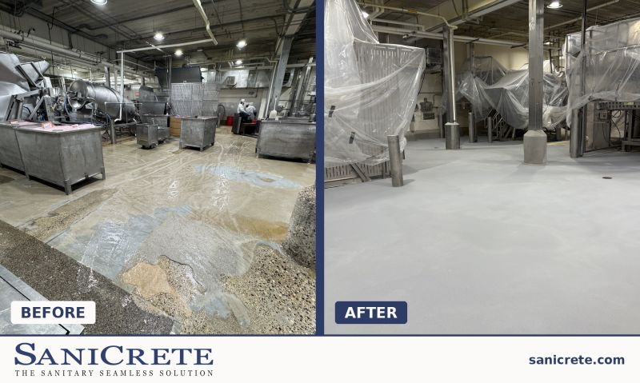
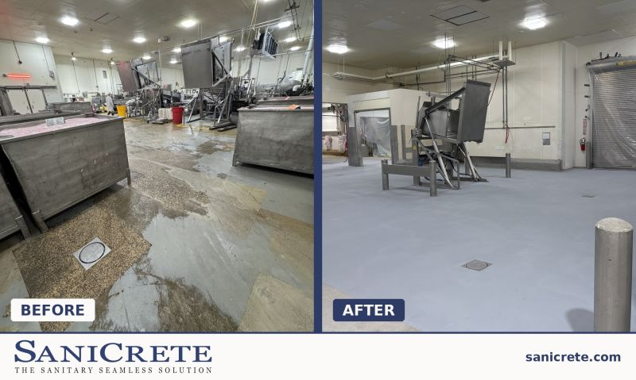
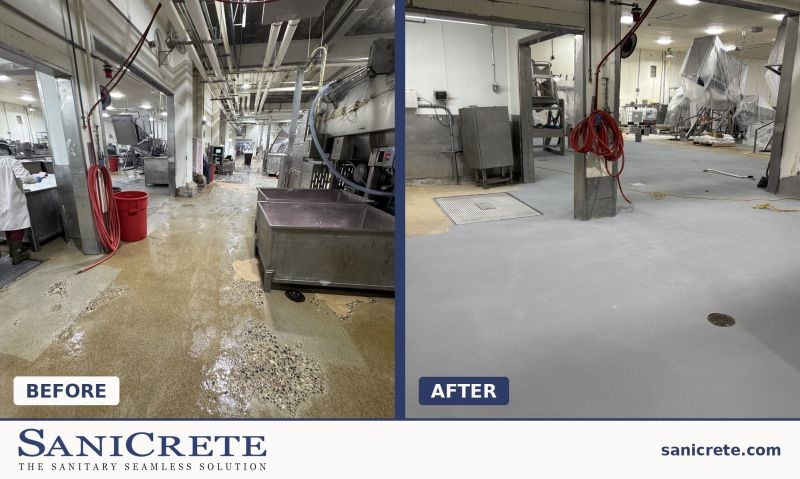

Food plant floors have to be tough, but that does not mean the finished room has to look rough.

Over the Memorial Day shutdown, our crew completed about 4,000 square feet of new SaniCrete STX 3/8 inch stainless steel reinforced cementitious urethane in this food processing space.
Before and After Matters
Shutdown work is not just about speed. The plant needs the room back with a surface that can handle traffic, washdowns, thermal shock, and cleaning chemicals without turning into another maintenance problem.


Built to Take a Beating
SaniCrete STX gives food processors a heavy-duty cementitious urethane floor that handles the physical and chemical abuse these spaces see every day. Built to take a beating. Looks pretty good too.